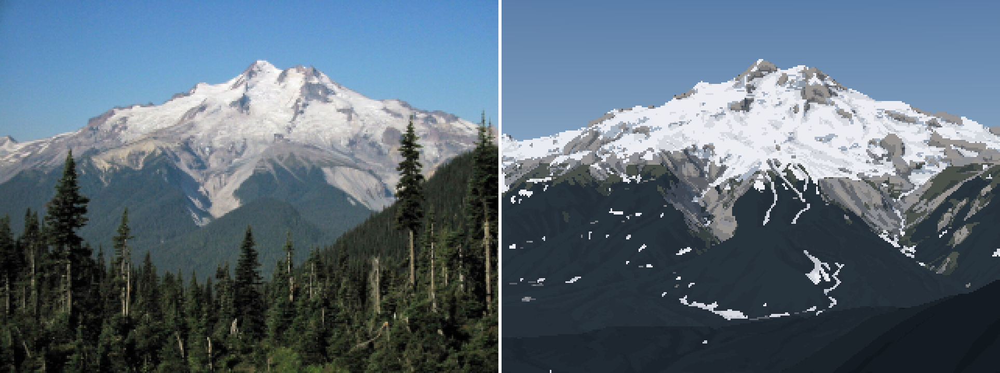
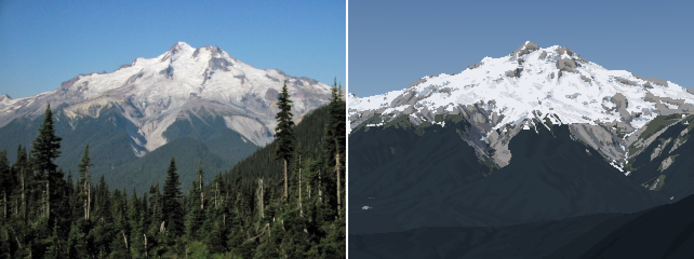

How-to 2: where the snow lies
Snow-peak student. Code: src/snowmodel.py, src/scene.py, src/dbg_cover.py, src/snowcmp.py. Story: POST.md §3, 8, 12–14.
From miles away you don't see snowfall. You see what's left after the snow has moved. Snow falls nearly evenly (more with height); then gravity sheds it off steep ground into gullies, onto ledges and into bowls; the sun melts south faces weeks before north faces and bares a rib while the gully beside it stays white; wind scours crests and loads lee slopes. Glaciers are where snow survives from year to year. A summer peak is therefore dark rock laced with white lines (couloirs) and bands (ledges), over white glacier surfaces that go grey below the firn line. It isn't a white cap with a clean snowline.
Imhof drew the structure that decides it. This drawing is my model system:

Eduard Imhof, Cartographic Relief Presentation, Figure 170: "Gullies in a rock wall consisting of homogeneous rock. Group of normal forms." Parallel gullies branching upward like a poplar tree, ribs between them, triangular frontal facets, and a debris cone at the foot of each gully. Summer snow lies in the channels; the ribs come through as Ruskin's "black points like arrow-heads through the snow."
So the snow model is not a painting rule ("put white above 2,000 m"). It's a stack of published processes run on the real terrain, each with numbers. Every correction below was forced by a photo.
The model in five steps
prep = snowmodel.prepare(T, wind_from=225) # expensive, once per peak: fields, wind, gravity, sun
S = snowmodel.apply(prep, SEASONS["sept"]) # cheap, per season: melt, glacier state, cover
S["hs"] # remaining depth (m)
S["cover"] # 0..1, with sub-grid ledge snow on steep rock
S["glacier"] # 0 none, 1 firn-covered, 2 bare ice
S["cornice"] # lee-crest lips
1. Accumulation grows with height. HS(z) = 0.45 m per 100 m above 300 m, capped at 9 m. Paradise at 1,650 m typically peaks at 4–6 m (the record is 9.3 m, in 1956).
2. Wind (Winstral Sx). For each cell, Sx is the maximum angle up to the terrain within 300 m upwind (averaged over the wind direction ±30°). Negative on exposed crests, positive in sheltered lees. Depth × clip(1 + 0.035·Sx, 0.15, 2.5).
3. Gravity (SnowSlide). Each cell holds at most a snow holding depth that falls exponentially with slope; the excess slides to lower neighbours in proportion to (drop/distance)^1.1. Cells are processed from the highest down, so snow cascades in one pass:
def holding_depth(slope, P):
return np.maximum(P["shd_c"] * np.exp(-P["shd_a"] * slope), P["shd_min"])
@njit(cache=True)
def _route(Z, hs, shd, res, pit_cap):
order = np.argsort(-Z.ravel()) # top down
out = hs.copy()
for idx in order:
i = idx // nx; j = idx % nx
ex = out[i, j] - shd[i, j]
if ex <= 0: continue
tw = 0.0
for k in range(8): # multiple flow directions
dz = Z[i, j] - Z[i + di[k], j + dj[k]]
w[k] = (dz / dist[k]) ** 1.1 if dz > 0 else 0.0; tw += w[k]
if tw <= 0: # a pit: fills to pit_cap, the rest is lost
out[i, j] = min(out[i, j], pit_cap); continue
out[i, j] = shd[i, j]
for k in range(8):
if w[k] > 0: out[i + di[k], j + dj[k]] += ex * w[k] / tw
return out
4. Melt. A season is one number: z_sl, the snowline of flat, undisturbed snow (late May ~1,250 m, early July ~1,900–2,100 m, September minimum ~2,150 m in the Cascades). The melt at each cell is what it takes to remove the accumulation at z_sl, more below it and less above, scaled half by air temperature and half by the cell's clear-sky insolation over May–August (with cast shadows, relative to a flat cell).
5. Glaciers. WorldCover's ice cells stay white firn where snow survives the season, and turn grey bare ice where it doesn't. Crevasses and cornices are marks drawn later by the painter (how-to 4).
The instrument: the model's cover under the photo
The model can't be judged in a painting, because too many other things are wrong there. Judge it naked: render the model's cover from the fitted camera at 3× the painting's resolution and stack it under the photo in grey (dbg_cover.py):
S = scene.Scene(shot, W=960); S.snow(season, season_over=dict(z_sl=z)); G = S.gbuffer()
c = np.where(G["sky"], 0.3, np.clip(G["cover"], 0, 1)); c = np.where(G["glacier"] > 0, 1.0, c)
out = np.concatenate([photo_grey, c, depth, lit], 0)
and a numeric version (snowcmp.py): threshold the photo's L*, threshold the model's cover, and take the IoU over the terrain above 1,500 m.

Rainier from the northeast, July. White: both say snow. Blue: photo only. Orange: model only. IoU 0.68. The orange on the steep lower rock was the first hint of the next correction.
Five corrections, each forced by a photo
1. The holding depth was too generous. Bernhardt & Schulz's default curve holds 0.45 m at 60° and 1.1 m at 45°. Under the photo, it kept Rainier's steep north walls white in July, while the photo shows dark rock with thin white threads:

OGGM's Snowslide implementation ships a much steeper default, c = 145 m, a = 0.14/°: 2.2 m at 30°, 0.27 m at 45°, 0.03 m at 60°. Switching to it bared everything above ~45°, as the photo does:

Faces steeper than 42° inside the WorldCover glacier mask are also treated as rock (ice_max_slope): the Willis Wall is mapped as ice, but it's a rock face with hanging ice.
2. Couloirs hold snow. On Stuart (4 m lidar), the steep curve shed nearly everything. The model kept 1.4% cover against the photo's white threads in every gully:

Snow wedged in a channel is held by its side walls, so a couloir holds more than an open slope of the same angle. Measure concavity as height minus the local mean over 25 m, count 4 m of concavity as a full gully, and multiply the holding depth:
cg = curvature(Z, res, P["gully_r"]) # Z - gaussian_filter(Z, r/res/2): <0 in hollows
gully = np.clip(-cg / P["gully_depth"], 0, 1)
shd = shd * (1 + P["k_gully"] * gully) # k_gully = 3 (6 was too much at Glacier Peak)

The snow is now in the channels and on the Stuart Glacier bench, including the big central couloir.
3. Lidar pits. The same Stuart depth panel said the maximum depth was 14,765 m. My routing kept everything that reached a closed depression, and 1 m lidar is full of tiny pits (boulders, trees, noise), so one pit collected a whole face's snow. Pits now fill to 15 m and the rest is lost, and all deposits are capped at 14 m (real avalanche cones are 5–15 m deep). The tell is a deposit deeper than the mountain is tall. Print hs.max() every time.
4. Glaciers keep their firn. The routing shed snow off 30° glacier surfaces just as it did off rock, and Glacier Peak's glaciers all came out as grey bare ice. But a glacier is retained snow. It doesn't sluff the way a rock face does. On mapped ice below 35°, keep the wind-redistributed depth:
on_gl = (prep["ice"] > 0.5) & (slope < 35)
rem = np.where(on_gl, np.maximum(rem, prep["hs_wind"] - melt), rem)
The firn line then falls near the published ELAs (Nisqually ~3,180 m, Emmons ~2,800 m): white upper glaciers over grey lower ones, as in the photo.
5. Melt is half temperature. With melt from insolation alone, deep avalanche cones in shaded valley bottoms survived all August as white blobs in the forest:

a5: the white patches in the forest below the mountain are avalanche deposits the model kept because they sit in shade. The photo has none.
Low snow melts from warm air whatever its aspect. So melt is half an aspect-blind degree-day term and half sun:
wT = Pd.get("w_temp", 0.5)
melt = acc_sl * np.clip(1 + Pd["k_melt"] * (z_sl - Z) / 1000, 0.05, None) * \
(wT + (1 - wT) * np.clip(I, 0.05, None) ** Pd["p_ins"])
rem = np.minimum(prep["hs_grav"], Pd.get("hs_cap", 14.0)) - melt
The painter also hides ground snow under forest canopy (canopy_hide): from a distance you see the trees, not the snow between them.

a6. The forest is clear, the upper glaciers are white, the lower ice is grey, and the dacite aprons are bare.
Sub-grid cover
A 15 m cell of 60° rock never has zero snow: ledges and cracks keep a streaky fraction (Haberkorn's snow pits on 50–65° walls found no drop in depth with angle up to 70°). So cover is depth-limited, and reduced but not zeroed on steep ground:
cover = np.clip(hs_rem / 0.4, 0, 1)
steep = np.clip((slope - 40) / 25, 0, 1)
cover = cover * (1 - 0.55 * steep) # a 65-deg face shows ~45% ledge snow at best
cover = np.where(glacier > 0, 1.0, cover)
The season knob
One number turns the model through the year. A sweep of z_sl against the July photo (calib.py), IoU at two photo L* thresholds. This ran before correction 1, with the old holding depth:
thr 65: z_sl 1500 0.586 | 1700 0.651 | 1900 0.693 | 2100 0.712 | 2300 0.722 | 2500 0.725
thr 55: z_sl 1500 0.689 | 1700 0.704 | 1900 0.702 | 2100 0.689 | 2300 0.679 | 2500 0.669
The IoU is flat across a kilometre of snowline, because the big glacier surfaces dominate it. It can't pick the snowline alone. I chose 1,900–2,100 m for early July by eye, from where the rock threads end. Use numbers as instruments, not judges.
What it doesn't do
- Wind and cornices are unverified against a photo pair. The Sx rule and the cornice condition (lee crest, exposed approach, a drop of more than 35° downwind, enough snow) are published, but I never had a fitted photo with a cornice in it.
- The couloir scale is fixed in metres (25 m radius, 4 m depth). That's right for 4–15 m DEMs, but on synthetic 1 m and 0.25 m terrain it missed the gullies entirely (how-to 5). It should scale with the grid.
- The seasons are one global snowline. The Olympics sit ~200 m lower than the Cascades, and year-to-year variation is larger than that.
- Nothing is simulated over time. It's one winter's accumulation, redistributed and melted in closed form. For voxsim that's the point: it's cheap and deterministic, and it runs on any heightfield (plain numpy plus two numba loops).